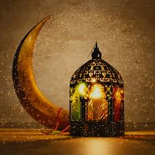

first we have the five essantial presets:
My Professional Website
Discover Islam’s Five Essential Pillars:
1-Shahada:beliving that there is no prophet except allah and mohanmed is his prophet
.jpg)
2-Prayer:muslim pray to the holy god if you wanna know more about islam visit us on the site: salat.com
.avif)
3-Alms(zakat):donate a fixed portion of income to community members in need.Many rulers and wealthy Muslims build mosques, drinking fountains, hospitals, schools, and other institutions both as a religious duty and to secure the blessings associated with charity.

4-Fasting (sawm). During the daylight hours of Ramadan, the ninth month of the Islamic calendar, all healthy adult Muslims are required to abstain from food and drink. Through this temporary deprivation, they renew their awareness of and gratitude for everything God has provided in their lives—including the Qur'an, which was first revealed during this month. During Ramadan they share the hunger and thirst of the needy as a reminder of the religious duty to help those less fortunate.
5-Pilgrimage (hajj). Every Muslim whose health and finances permit it must make at least one visit to the holy city of Mecca, in present-day Saudi Arabia. The Ka'ba, a cubical structure covered in black embroidered hangings, is at the center of the Haram Mosque in Mecca (fig. 2). Muslims believe that it is the house Abraham (Ibrahim in Arabic) built for God, and face in its direction (qibla) when they pray. Since the time of the Prophet Muhammad, believers from all over the world have gathered around the Ka'ba in Mecca on the eighth and twelfth days of the final month of the Islamic calendar.
.jpeg)